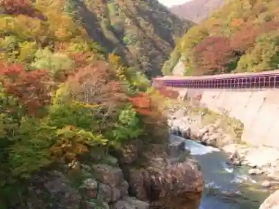
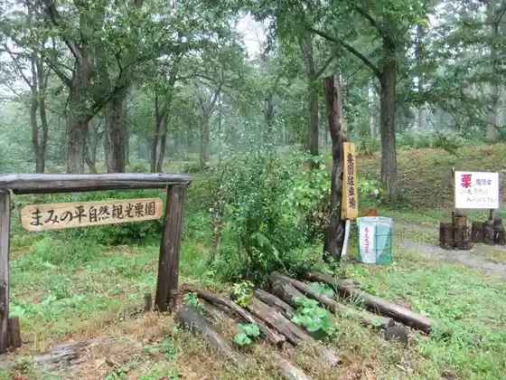
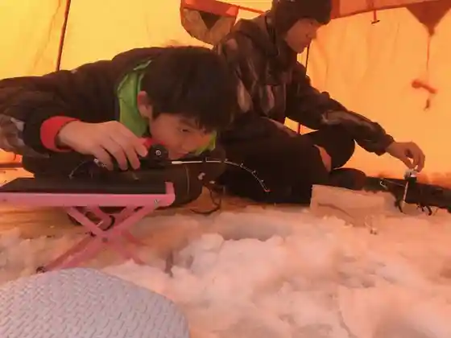
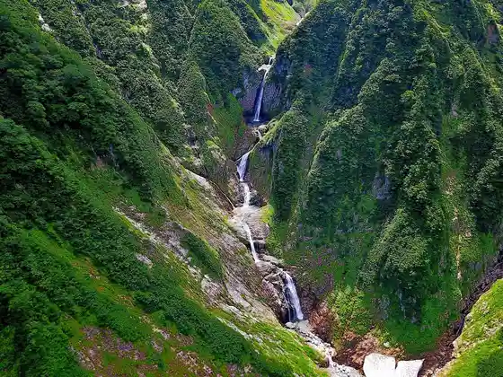

Akashiba Kyo
Oguni, Yamagata · 0238-62-5130 · Official / source link

“ Mami no Taira ” Nature Kanko Kuri Sono
Oguni, Yamagata · 0238-62-4918 · Official / source link

Wakasagi Tsuri Experience
Oguni, Yamagata · 090-2607-7757 · Official / source link

Baika Kawa Falls
Oguni, Yamagata · 0238-62-2416 · Official / source link

Roadside Station (Shiroi Mori Oguni)
Oguni, Yamagata · 0238-62-3719 · Official / source link
Taru Kuchi Toge no Ippon Sakura
Oguni, Yamagata · 0238-62-5130 · Official / source link
Tamagawa Keiryu Nitta Hashi
Oguni, Yamagata · 0238-62-5130 · Official / source link
Mori no Megumi Chokubai Tokoro
Oguni, Yamagata · 0238-65-2158 · Official / source link
Matagi no Sato Koryu Kan
Oguni, Yamagata · 0238-64-2525 · Official / source link
Sakuragawa Shuzo
Oguni, Yamagata · 0238-62-2011 · Official / source link
Buna Forest On Mi Taira (Nukumidaira) Mini Tour (8 Gatsu 10 Gatsu no Nichi Shuku) Jisshi
Oguni, Yamagata · 0238-62-5130 · Official / source link
Tengubashi
Oguni, Yamagata · 0238-62-2416 · Official / source link
Shiroi Mori Yokone Bussan Hin Chokubai Tokoro
Oguni, Yamagata · 0238-62-3719 · Official / source link
Omiya Koyasu Ryo Shrine
Oguni, Yamagata · 0238-62-2347 · Official / source link
Kurosawa Toge Shikiishi Michi
Oguni, Yamagata · 0238-62-4496 · Official / source link
Shiroi Mori Oto Campground
Oguni, Yamagata · 0238-67-2778 · Official / source link
Kenko no Mori Yokone
Oguni, Yamagata · 0238-62-5584 · Official / source link
Buna Forest On Mi Taira Ritoriito Tour Mori no Naka Deo Hirune Teiitaimu
Oguni, Yamagata · 0238-62-5130 · Official / source link
Icho Plaza
Oguni, Yamagata · 0238-62-5130 · Official / source link
Iide Onsen Baika Kawa So Sakura Park
Oguni, Yamagata · 0238-62-5130 · Official / source link
Asahi Mata Taki
Oguni, Yamagata · 0238-62-2416 · Official / source link
Yagisawa Otaki
Oguni, Yamagata · 0238-62-5584 · Official / source link
Oguni Sogo Supotsu Park
Oguni, Yamagata · 0238-62-5666 · Official / source link
Oguni Takushii
Oguni, Yamagata · 0238-62-3223 · Official / source link
Yokokawa Dam Shiroi Mori Oguni Mizumi
Oguni, Yamagata · 0238-65-2363 · Official / source link
Shinrin Serapii (R) Kichi Buna Forest On Mi Taira (Nukumidaira)
Oguni, Yamagata · 0238-62-5130 · Official / source link
On Mi Taira Fuchi Tansho Hayashi
Oguni, Yamagata · 0238-62-2246 · Official / source link
Park Gorufu Ba
Oguni, Yamagata · Official / source link
Yokone Ski Area
Oguni, Yamagata · 0238-62-4723 · Official / source link
Yokokawa Dam Kitekuro Kan
Oguni, Yamagata · 0238-65-2363 · Official / source link
Oguni Tami Puru
Oguni, Yamagata · 0238-62-2141 · Official / source link
Shiroi Moriki Ko Kan Mokko Experience / Oguni
Oguni, Yamagata · 0238-67-2011 · Official / source link
Oguni Shiroi Kyodo Forest
Oguni, Yamagata · 0238-62-2416 · Official / source link
Fuwayuki Kori
Oguni, Yamagata · Official / source link